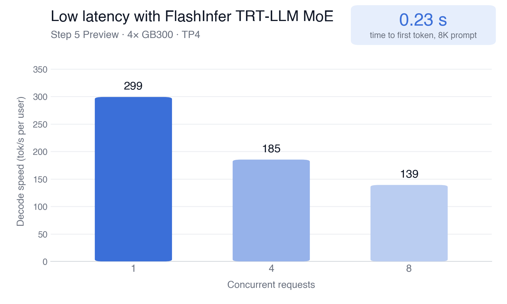
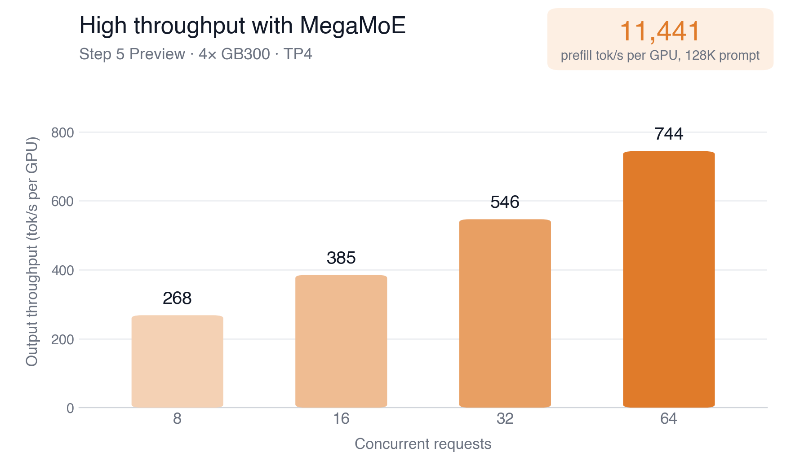
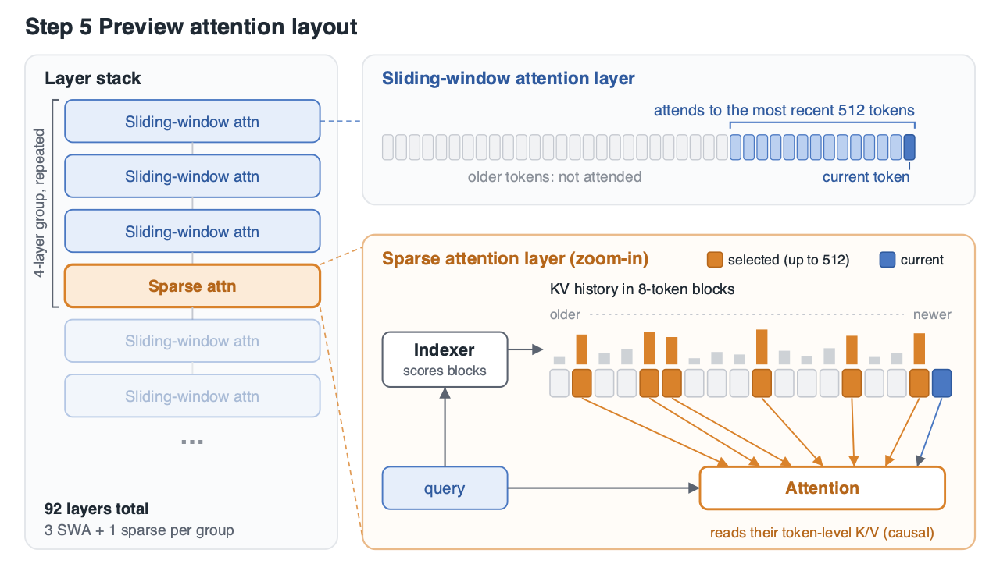
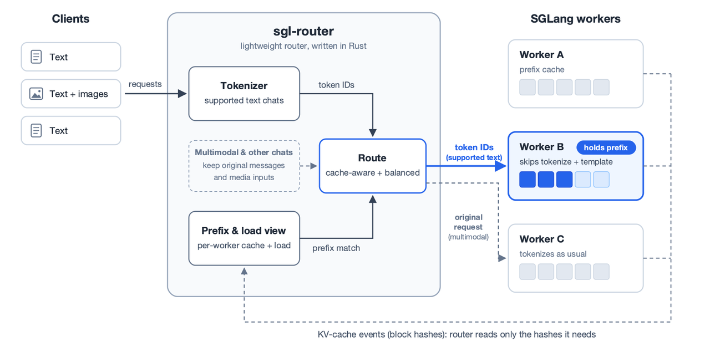
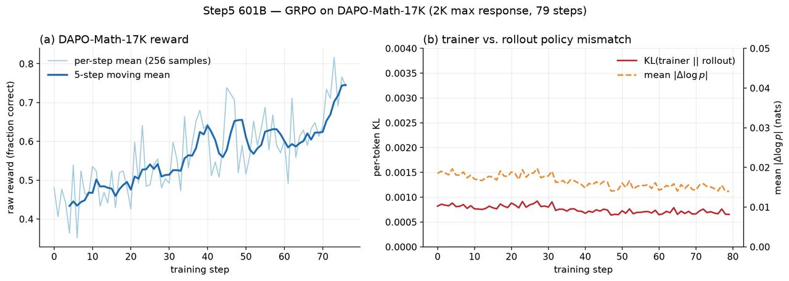

AI 智能体往往需要多个步骤才能完成任务。修复缺陷时，它可能先阅读代码、运行测试、查看错误，再反复尝试，并不断累积稍后可能用到的信息。随着历史记录增长，模型在响应之前需要读取的内容越来越多，而 GPU 还必须同时服务其他正在执行任务的用户。
Step 5 Preview 已经通过 SGLang 的推理引擎和路由层投入生产服务。 在生产服务工作的基础上，SGLang 与 Miles 从发布首日起为 Step 5 Preview 提供推理和强化学习支持。在 4 张 GB300 GPU 上，当 MTP 平均接受长度为 2.85 时，FlashInfer TRT-LLM MoE 处理单个请求的解码速度约为 299 token/s；在 64 个并发请求下，MegaMoE 达到每张 GPU 约 740 输出 token/s。Miles 还完成了一次 79 步 GRPO 训练，具体结果见下文。

低延迟 FlashInfer TRT-LLM MoE：在 4× GB300（TP4）上，1 至 8 个并发请求的单用户解码速度。首 token 延迟使用单个、提示长度为 8K token 的请求测量。

高吞吐 MegaMoE：在 4× GB300（TP4）上，8 至 64 个并发请求的单 GPU 输出吞吐量。预填充吞吐量使用单个 128K-token 提示测量，计算方式为提示 token 数 / 首 token 时间 / 4 张 GPU。两张图均采用 FP8 路由专家（最后三个 MoE 层使用 BF16）、BF16 KV 缓存、平均接受长度 2.85 的 MTP、约 8K 输入 token 和 768 至 1,280 输出 token；测试使用公开文本，且无前缀缓存命中。
快速开始
请先按照 SGLang Cookbook 完成环境设置，然后使用以下命令启动 Step 5 Preview：
sglang serve \
--trust-remote-code \
--model-path stepfun-ai/Step-5-Preview \
--tp 4 \
--moe-runner-backend flashinfer_trtllm \
--attention-backend fa4 \
--page-size 64 \
--kv-cache-dtype bfloat16 \
--mem-fraction-static 0.9 \
--swa-full-tokens-ratio 0.03 \
--chunked-prefill-size 16384 \
--max-running-requests 64 \
--cuda-graph-backend-prefill breakable \
--flashinfer-allreduce-fusion-backend trtllm \
--speculative-algorithm EAGLE \
--speculative-num-steps 3 \
--speculative-eagle-topk 1 \
--speculative-num-draft-tokens 4 \
--enable-multi-layer-eagle \
--reasoning-parser step5 \
--tool-call-parser step5 \
--host 0.0.0.0 \
--port 30000
如需进行强化学习和后训练，请参阅 Miles Cookbook。
概览
Step 5 Preview 具有 6,000 亿总参数、每个 token 激活 270 亿参数、100 万 token 上下文窗口，并支持图像输入。它的主要架构选择分别对应智能体工作负载的不同部分：稀疏专家限制每个 token 使用的计算量，混合注意力控制每层读取多少历史信息，三个多 token 预测（MTP）层则支持推测解码。
| 模型特性 | 配置 | 能力 |
|---|---|---|
| 稀疏 MoE | 总参数 600B、激活参数 27B；352 个路由专家中选择 8 个，另有 1 个共享专家 | 每个 token 只使用模型的一部分 |
| 长上下文 | 最多 100 万 token | 为文档、代码和持续累积的任务历史提供空间 |
| 图像输入 | 文本与图像 | 可在请求中包含截图和其他视觉材料 |
| 混合注意力 | 3 个滑动窗口层后接 1 个稀疏层；共 92 层 | 结合近期上下文与经过选择的更早信息 |
| MTP | 3 个预测层 | 一次提出多个 token 并一并验证 |
混合注意力
长时间运行的智能体既需要最新的工具结果，也需要任务早期的信息。如果每层都读取完整历史，历史越长，计算量就越大。Step 5 Preview 将短期近期窗口与对更早上下文的选择性访问结合起来，相比每层都读取完整历史，服务系统所需执行的注意力计算更少。
每四层中有三层只读取最近 512 个 token。第四层会对以 8 个 token 为一块的摘要评分，最多选择 512 个历史块，随后读取这些块中的各个 token 以及当前块。通过这种方式，模型能够回溯更早的上下文，同时让大多数层聚焦于近期信息。

Step 5 Preview 重复使用“三个滑动窗口注意力层 + 一个稀疏注意力层”的分组。局部层读取最近 512 个 token；在每个稀疏层中，索引器对 8-token 块评分，注意力读取最多 512 个选中历史块以及当前块中的 token 级 key 和 value。
SGLang 首日支持
对于应用团队，服务挑战主要有两部分：一是用户增多时仍保持快速响应，二是智能体进入下一步时避免重复处理相同的任务历史。SGLang 通过 StepFun 提供的稀疏注意力内核、多种 MoE 后端，以及考虑缓存上下文的路由机制来解决这些问题。
StepFun 提供的内核
StepFun 为 Step 5 Preview 的稀疏注意力开发了优化内核，并在本次发布中贡献给 SGLang。我们感谢 StepFun 团队提供这些内核、支持开源社区，并与我们密切合作，使其从发布首日起就在 NVIDIA GPU 上以最佳方式运行：
- 稀疏预填充：将索引器为整个批次选出的块汇聚为一个共享集合，然后使用针对每条查询的掩码在这个集合上执行注意力。
- 稀疏解码：只在选中的块上运行解码注意力，将较长的 KV 历史分割为多个分区，再合并部分结果。
- 索引器评分：对预填充和解码，直接让每条 query 与 SGLang 分页缓存中的压缩历史进行评分。
性能
SGLang 为 Step 5 Preview 提供两种 MoE 后端，分别适合不同流量模式。FlashInfer TRT-LLM MoE 在低并发时提供出色的低延迟性能：单请求解码速度约为 299 token/s。MegaMoE 则在并发增长时提供更高吞吐量：在 64 个并发请求下，每张 GPU 约产生 740 输出 token/s；对 128K-token 提示进行预填充时，按完整提示平均，每张 GPU 的吞吐量约为 11,440 token/s。解码结果使用平均接受长度为 2.85 的 MTP。
生产服务
生产流量与固定基准测试的挑战不同：请求可能突发到达，输入长度各异，不同 worker 承担的负载也不同。关键问题包括用户要等待多久才能收到响应、后续生成是否流畅，以及每张 GPU 在满足延迟目标的同时能够提供多少输出。
路由层通过选择每个请求的执行位置来提供帮助。智能体在一次工具调用后，往往会再次发送大部分相同上下文；已经持有该前缀的 worker 可以复用缓存计算。路由器同时跟踪已缓存前缀和 worker 负载，因此能够在避免请求集中到过载 worker 的同时优先复用缓存。它支持 Kubernetes 部署，并能随着 worker 池扩大而跨副本扩展。该路由器正在准备正式发布；本节介绍它在 Step 5 Preview 服务工作中的使用方式。

对于受支持的文本聊天，路由器在平衡负载的同时，把 token ID 转发给持有请求前缀的 worker。多模态请求和不受支持的聊天格式会保留原始消息及媒体，由引擎侧处理。worker 发布 KV 缓存事件，使路由器对前缀缓存的视图保持最新。
为 Step 5 Preview 开发的两项优化减少了这条路径中的重复 CPU 工作。
在路由器与引擎之间复用分词结果。 路由器需要 token ID 来匹配前缀，如果引擎再次对同一请求分词，就会重复工作。对于受支持的文本聊天，路由器会转发这些 ID，引擎则跳过分词和聊天模板处理。只有当一致性检查确认这些 ID 与引擎自身生成的结果相同时，才启用这条路径，否则回退到原有流程。多模态请求和不受支持的格式仍保留原始输入。这样既消除了冗余处理，也保留了引擎原有的输入处理能力。
保持轻量的缓存更新。 worker 会频繁发送描述 KV 缓存变化的事件。路由只需要这些事件中的块哈希，因此解码器会跳过 token-ID 载荷，且不为其分配数组，从而在事件流增长时减少工作量。每个 worker 的指标会跟踪事件缺失、发布器重置和解码失败，使运维人员能够发现路由所用缓存视图的问题。
Miles 首日支持
模型投入应用服务后，团队可能还希望针对特定任务继续训练。Miles 为 Step 5 Preview 提供了这条路径，并通过一次可用的强化学习运行展示了学习进展，以及训练系统与 rollout 系统之间的一致性。rollout 系统负责生成训练所需响应，因此检查两个系统对这些响应的评分是否相近，是一项重要的集成验证。
在一次基于 DAPO-Math-17K 的 79 步 GRPO 训练中，训练奖励的五步移动平均值从约 0.44 提高到 0.75，表明模型正在数学训练负载上学习。该训练将响应长度上限设为 2K，每步使用 256 个样本。

在 DAPO-Math-17K 上进行 79 步 GRPO，响应长度上限为 2K，每步 256 个样本。左图：逐步奖励及其五步移动平均值。右图：训练器与 rollout 之间的逐 token KL 散度和平均绝对对数概率差。所提供的运行标记为 Step5 601B。
右侧面板检查训练器与 rollout 的一致性。逐 token KL 大致保持在 0.0006 至 0.0009 之间，平均绝对对数概率差在整个训练中也一直较低。两张面板共同表明，这套配置既能训练模型，也能使训练器与 rollout 引擎保持高度一致。
对于计划开展后训练的团队，这说明强化学习路径已经通过一次真实学习运行得到验证。但它还不能证明编程智能体能力更强，或在留出数学评测中得分更高；这些改进仍需针对团队计划部署的任务单独评估。
致谢
这项工作由 SGLang、Miles 和 StepFun 团队合作完成，并得到了 NVIDIA 与阿里云百炼的支持。
阿里云百炼：Peng Yu、Zhangheng Huang、Zhiyang Huang、Zhen Wang